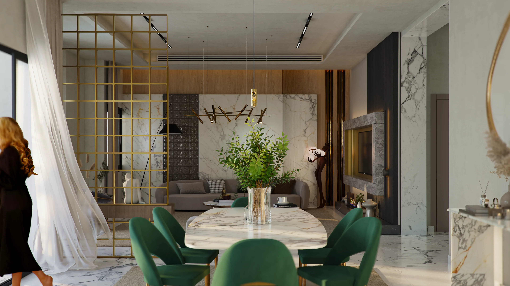
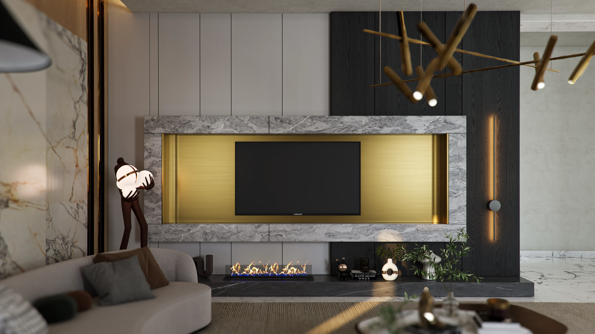
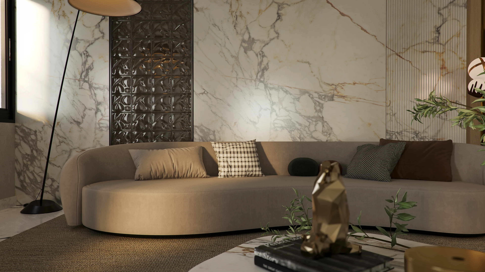

Residential · Interior Design
Apartment Celeste
The Concept
Light, proportion and effortless permanence.
The brief centred on creating a contemporary home without relying on a short-lived visual language. The architecture remains legible, while softer furnishings, measured contrast and carefully framed natural light give the interior a quieter sense of permanence.




Design Resolution
A contemporary home without visual noise.
Material, light and proportion carry the atmosphere. Rather than adding unnecessary decoration, the design uses a restrained palette and carefully balanced forms to create a home that feels composed, tactile and personal.
A considered point of view
Designed for how the home is lived — not simply how it is seen.
Apartment Celeste reflects Akili Studio's approach to residential interiors: thoughtful planning, controlled materiality and a calm visual language designed to remain relevant over time.